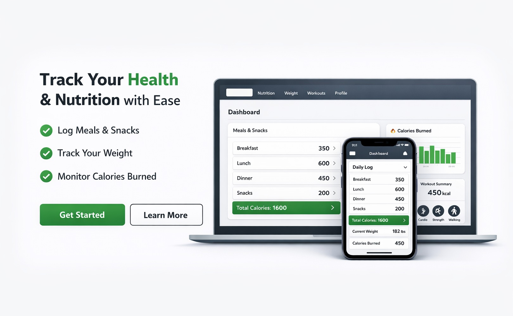

Simple. Structured. Consistent.
Track the habits that build real progress.
Built Daily helps users track nutrition, weight, and consistency in one place so progress stays clear, measurable, and repeatable.
Already have an account? Log in here
Features
Everything you need. Nothing you don't.
Simple tools built around the fundamentals that drive real progress.
Daily Logging
Track calories, protein, carbs, fat, and water in one place.
Weight Tracking
Log bodyweight over time and keep progress visible.
Personalized Goals
Use profile-based calorie targets built around your stats and activity level.
Consistency Dashboard
See trends, summaries, and daily momentum at a glance.
How It Works
How Built Daily Works
Three simple steps to start building better habits.
Create your profile
Set your goals and daily targets based on your stats.
Track your daily data
Log nutrition, weight, and consistency in one place.
See your progress
Monitor trends and stay accountable every day.
Philosophy
Built for consistency.
Most apps try to do everything. Built Daily focuses on the few things that actually matter most: awareness, consistency, and daily execution.
Instead of overwhelming dashboards and endless complexity, it keeps progress simple, visible, and actionable.
Dashboard
See your progress clearly.
Built Daily gives users a clean dashboard that keeps daily progress visible and easy to understand.
Calories Today
1,840
of 2,200 target
Protein
142g
of 180g goal
Current Weight
183.2
lbs · goal 175
Weekly Consistency
86%
6 of 7 days logged
Recent Logs
Weight Progress
Who It's For
Built for people who want structure without the noise.
Get Started
Start building better days.
Create your account, track what matters, and stay consistent one day at a time.